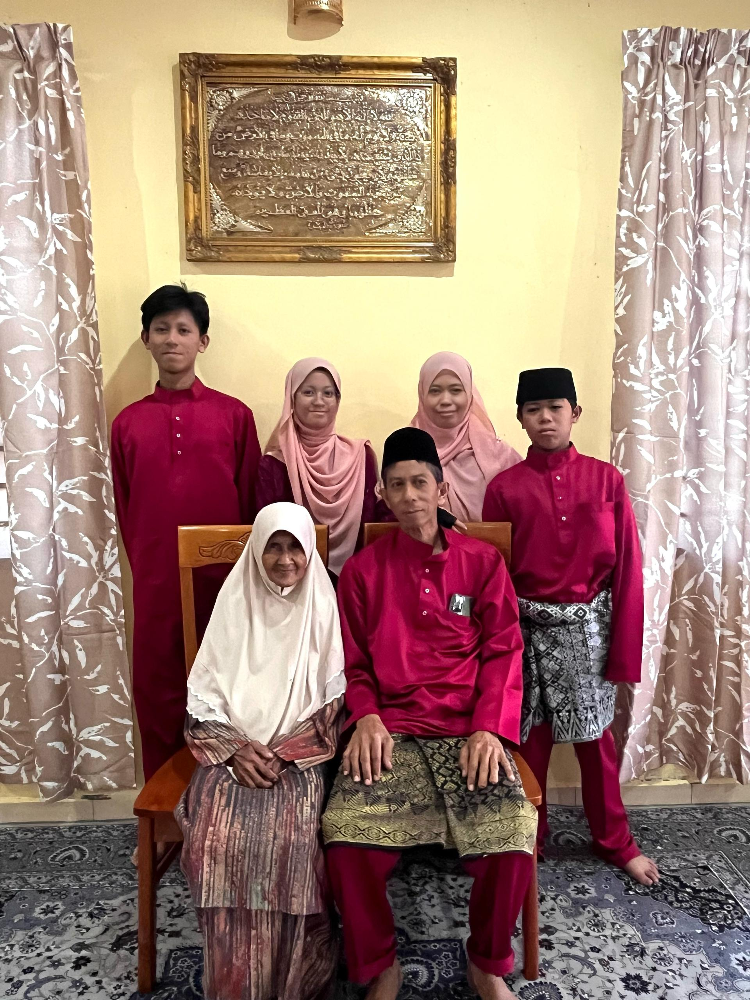
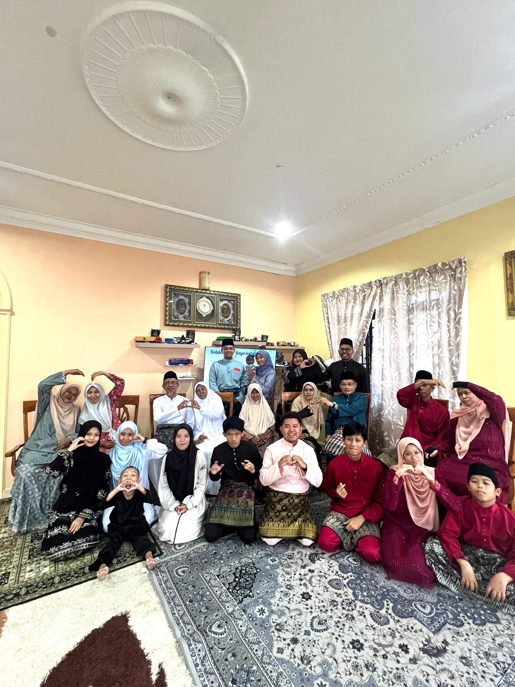
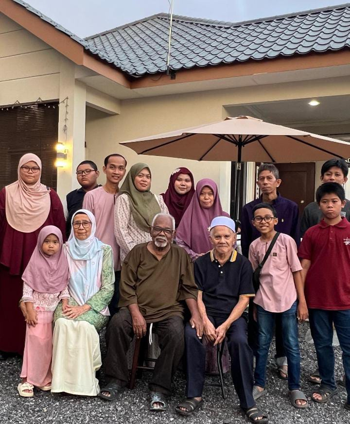

"My Small Family"
Let me introduce you to my family—a small, close-knit circle of five people who mean the world to me. I'm the eldest child and the only daughter in our family. A role that comes with both responsibility and pride. Being the big sister has shaped me into someone who values leadership, understanding, and setting a good example for my younger siblings.
I have two younger brothers. One has just stepped into the world of secondary school as a Form 1 student, full of energy and curiosity. The other is in Form 5, currently preparing for one of the most important exams in his school life as he works toward completing his secondary education. Watching them grow into their own personalities and aspirations is something I genuinely cherish.
What makes our family special is not just our love for each other, but the way we prioritize spending quality time together. Whether it’s a simple meal, a shared laugh, or a quiet evening at home, those moments mean everything to us. We believe that family time is not just about being in the same place—it’s about being present for each other, emotionally and mentally.
Our parents have raised us with a balance of love and discipline, always guiding us with care and intention. My father is a firm yet humorous man—he sets clear expectations but also knows how to keep things light with his jokes. He works at a company in Selangor, which means he often has to travel back and forth between his workplace and home. Despite the distance and his busy schedule, he remains committed to being present for the family.
My mother is a dedicated homemaker who plays a vital role in our lives. She’s always attentive to our needs and activities, making sure that we’re on the right path and supported in everything we do. Her patience, warmth, and intuition are the heart of our home.
I’m truly grateful for the upbringing my parents have given us. Their love, discipline, and sacrifices have shaped who we are and continue to inspire us to become individuals who are strong, kind, and useful to others one day.

"My Dad's Side of Family"
My dad comes from the charming town of Tanjong Ipoh in Negeri Sembilan — a place full of tradition, culture, and a strong sense of community. His family has always been warm, loving, and close-knit. Being around them makes you feel safe and cared for, like you’re exactly where you belong. Every time we visit, there's always laughter, delicious food, and stories shared with so much pride.
My dad was born and raised in Kampung Tanjong Ipoh. He’s the ninth of ten siblings, and he grew up surrounded by love from my grandparents. They were kind but also firm when it came to raising their children, making sure everyone grew up with good values and strong bonds. That same love and discipline still shows in how close the whole family is today.
Spending time with my dad’s side of the family has taught me to appreciate where I come from. The older generation is full of wisdom and always ready to share advice, while the younger ones are brought up with the same sense of respect, love, and unity. Even as everyone grows and moves on with life, there's something about Tanjong Ipoh that keeps us all connected.
The photo you see was taken on the first day of Raya 2025 — a day filled with laughter, love, and memories we’ll always hold close.

"My Mum's Side of Family"
My mum comes from the warm and lively district of Kuala Langat, Selangor — a place full of heart, tradition, and togetherness. Her family is the kind that makes you feel instantly at home, with open arms, cheerful smiles, and genuine kindness that never feels forced.
Every time we gather, the house comes alive with laughter and joy. There’s always good food, happy chatter, and that special feeling of being surrounded by people who truly care. One of the best parts for me is spending time with my cousins — we’ve been playing and growing up together since we were little, and even now, we’re still as close as ever. Whether it's goofing around, sharing jokes, or just hanging out, those moments mean so much to me.
The bond we share as cousins is something I’ll always treasure. It’s more than just family — they’re like my best friends, the ones who’ve been there through every stage of life. No matter how much time passes, being around them always brings me back to those carefree childhood days filled with fun, laughter, and love.
This photo was taken during Raya 2025 at my mum’s aunt’s house in Kanchong, Selangor. It was such a beautiful day — full of smiles, laughter, and meaningful memories with the people who’ve been a part of my life for as long as I can remember.